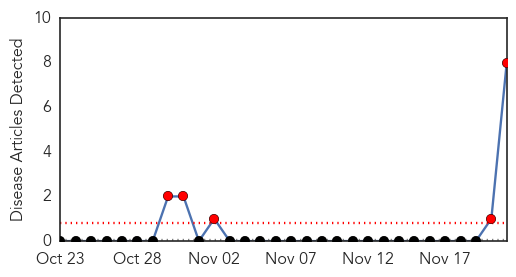
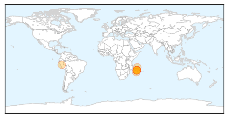
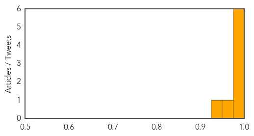
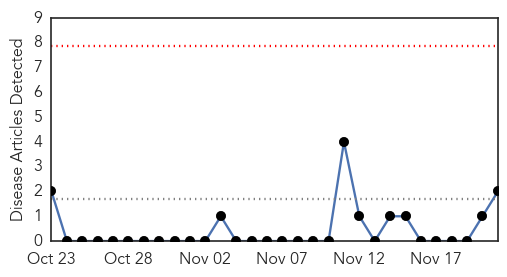

Bubonic Plague
30-Day Web Trend
5 alerts, 0 warnings

30-Day Twitter Trend
0 alerts, 0 warnings

Article Locations
Article Confidences
Top Articles:
- 0.992
- Disease outbreak news
- 0.991
- Plague – Madagascar, 21 November 2014 - Madagascar
- 0.989
- Plague outbreak in Madagascar kills 40 people since late August, WHO reports
- 0.988
- WHO is Notified of Plague Outbreak in Madagascar
- 0.987
- WHO Reports an Outbreak of Plague in Madagascar
- 0.975
- Bubonic plague outbreak kills 40 in Madagascar
- 0.954
- Total of 40 people die of plague in Madagascar since August — WHO
- 0.937
- Madagascar Struggles to Control a Plague Outbreak
Top Tweets:
-
No tweets found for Nov 21, 2014
Hemmorhagic Fever
30-Day Web Trend
0 alerts, 0 warnings

30-Day Twitter Trend
0 alerts, 0 warnings

Article Locations

Article Confidences

Top Articles:
Top Tweets:
-
No tweets found for Nov 21, 2014